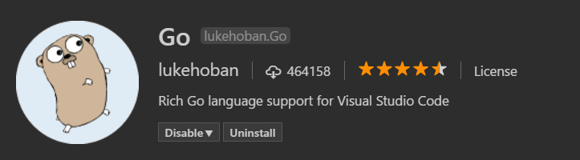

Go programming in VS Code
Using the Go extension for Visual Studio Code, you get language features like IntelliSense, code navigation, symbol search, bracket matching, snippets and many more that will help you in Golang development.

You can install the Go extension from the VS Code Marketplace.
IntelliSense
Auto completions
As you type in a Go file, you can see IntelliSense providing
you with suggested completions. This even works for members in
current, imported, and not yet imported packages. Just type
any package name followed by ., and you will get
suggestions for the corresponding package members.
By setting go.autocompleteUnimportedPackages to
true in your
settings, you can also get suggestion for packages that you could
import. Select one of these suggestions and an import to the
selected package will be added to your file.
Tip: Use
kb(editor.action.triggerSuggest)to trigger the suggestions manually.
Hover Information
Hovering on any variable, function, or struct will give you information on that item such as documentation, signature, etc.

By default, the extension uses godef and
godoc to get this information. You can choose to
use gogetdoc instead by changing the setting
go.docsTool in your User or Workspace Settings.
Signature help
When you open the ( while calling a function, a
pop-up provides signature help for the function. As you keep
typing the parameters, the hint (underline) moves to the next
parameter.

Tip: Use
kb(editor.action.triggerParameterHints)to manually trigger the signature help when the cursor is inside the()in the function call.
The extension's signature help also uses
godef and godoc. You can choose to
use gogetdoc instead by changing the setting
go.docsTool in your User or Workspace Settings.
Code navigation
Code navigation features are available in the context menu in the editor.
-
Go To Definition
kb(editor.action.goToDeclaration)- Go to the source code of the type definition. -
Peek Definition
kb(editor.action.previewDeclaration)- Bring up a Peek window with the type definition. -
Find All References
kb(editor.action.referenceSearch.trigger)- Find all references for the type.
You can navigate via symbol search using the
Go to Symbol commands from the
Command Palette
(kb(workbench.action.showCommands)).
-
Go to Symbol in File -
kb(workbench.action.gotoSymbol) -
Go to Symbol in Workspace -
kb(workbench.action.showAllSymbols)
You can also navigate back and forth between a Go file and its test implementation using the Go: Toggle Test File command.
Build, Lint and Vet
On save, the Go extension can run go build,
go vet and your choice of linting tool (golint
or gometalinter) on the package of the current
file. You can control these features via the settings below:
go.buildOnSavego.buildFlagsgo.vetOnSavego.vetFlagsgo.lintOnSavego.lintFlagsgo.lintToolgo.testOnSave
The errors and warnings from running any/all of the above will be shown red/green squiggly lines in the editor. These also show up in the Problems panel (View > Problems).
Formatting
You can format your Go file using
kb(editor.action.formatDocument) or by running
the Format Document command from the
Command Palette or the context menu in the
editor.
By default, formatting is run when you save your Go file. You
can disable this behavior by setting
go.formatOnSave to false.
You can choose among three formatting tools:
gofmt, goreturns and
goimports by changing the setting
go.formatTool.
Test
There are many test related commands that you can explore by typing "Go: test" in the Command Palette.

The first three above can be used to generate test skeletons
for the functions in the current package, file or at cursor
using gotests. The last few can be used to run
tests in the current package, file or at cursor using
go test. There is also a command for getting test
coverage.
Import packages
Run the command Go: Add Import to get a list of packages that can be imported to your Go file. Choose one and it will get added in the import block of your Go file.
Rename Symbols
You can rename symbols using
kb(editor.action.rename) or by running the
Rename Symbol command in the context menu in
the editor.
Debugging
The Go extension lets you debug Go code as well. You will need to install the Delve debugger manually as a prerequisite. Read Debugging Go code using VS Code for setup steps, information on remote debugging and a troubleshooting guide.
Next Steps
This has been a brief overview showing the Go extension features within VS Code. For more information, see the details provided in the Go extension README.
To stay up to date on the latest features/bug fixes for the Go extension, see the CHANGELOG.
If you have any issues or feature requests, feel free to log them in the Go extension repo.
If you'd like to learn more about VS Code, try these topics:
- Basic Editing - A quick introduction to the basics of the VS Code editor.
- Install an Extension - Learn about other extensions are available in the Marketplace.
- Code Navigation - Move quickly through your source code.